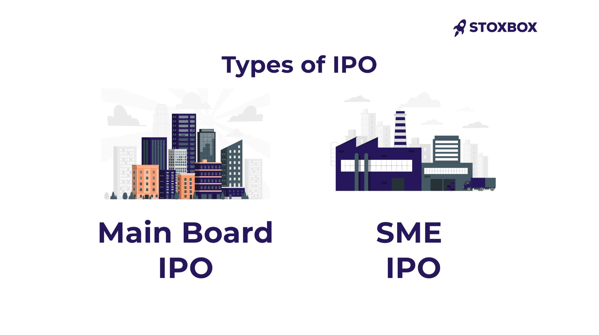
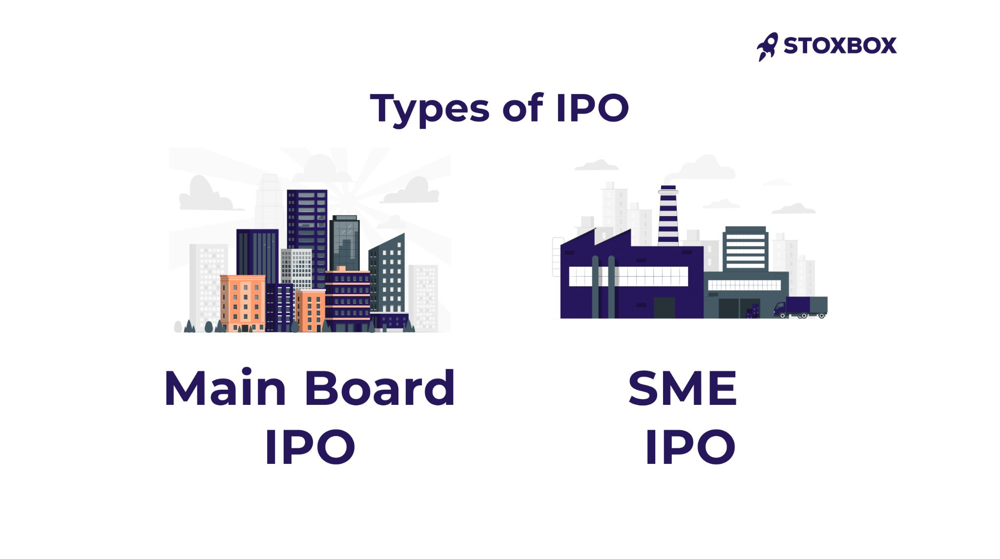

A Mainboard IPO (Initial Public Offering) is the process through which large, established companies raise capital by issuing shares to the public for the first time, listing them on major stock exchanges like the National Stock Exchange (NSE) or Bomba
y Stock Exchange (BSE). These
IPOs are regulated by SEBI and are characterized by high liquidity,
substantial issue sizes, and strict financial eligibility criteria.
मेनबोर्ड आईपीओ (प्रारंभिक सार्वजनिक पेशकश) वह प्रक्रिया है जिसके माध्यम
से बड़ी और स्थापित कंपनियां पहली बार जनता को शेयर जारी करके पूंजी जुटाती
हैं और उन्हें राष्ट्रीय स्टॉक एक्सचेंज (एनएसई) या बॉम्बे स्टॉक एक्सचेंज
(बीएसई) जैसे प्रमुख स्टॉक एक्सचेंजों पर सूचीबद्ध करती हैं। ये आईपीओ
एसईबीआई द्वारा विनियमित होते हैं और इनमें उच्च तरलता, पर्याप्त मात्रा
में शेयर जारी करना और सख्त वित्तीय पात्रता मानदंड होते हैं।
An SME IPO (Small and Medium Enterprise Initial Public Offering) allows smaller companies to raise capital by listing on specialized stock exchange platforms rather than the mainboard. In India, these companies list on BSE SME or NSE Emerge. लघु एवं मध्यम उद्यम (एसएमई) आईपीओ (IPO) के माध्यम से छोटी कंपनियां मुख्य स्टॉक एक्सचेंज के बजाय विशेष स्टॉक एक्सचेंज प्लेटफॉर्म पर सूचीबद्ध होकर पूंजी जुटा सकती हैं। भारत में, ये कंपनियां बीएसई एसएमई या एनएसई इमर्ज पर सूचीबद्ध होती हैं।